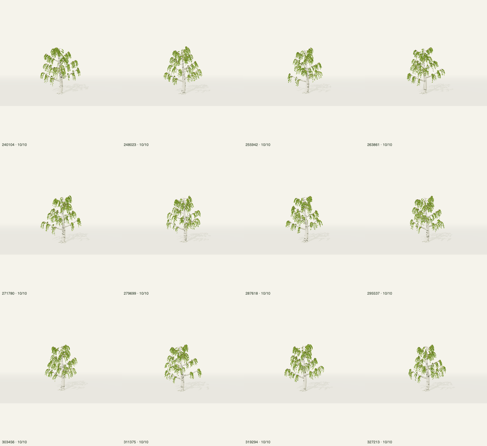
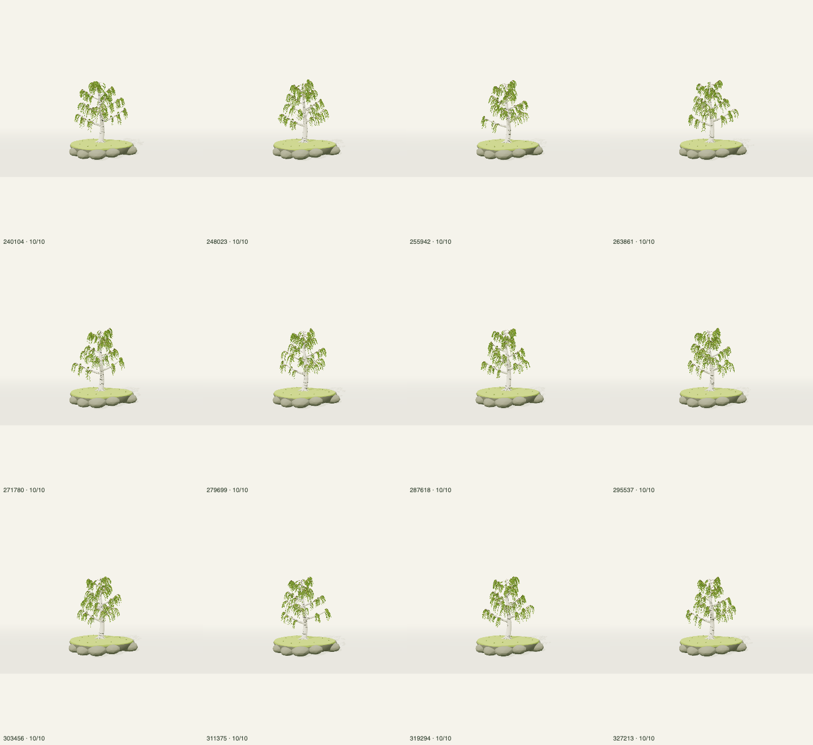
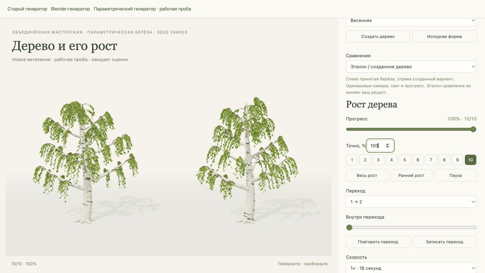
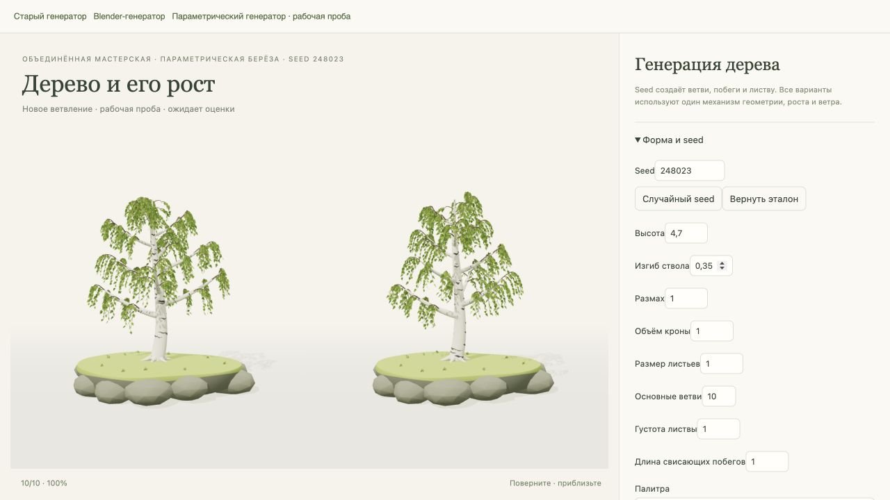
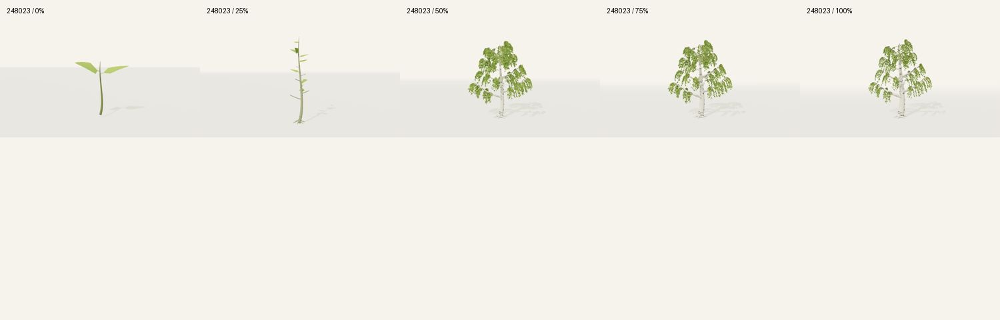
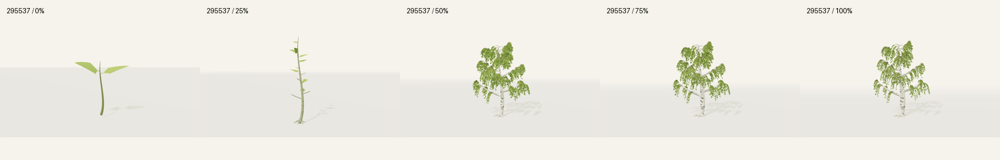
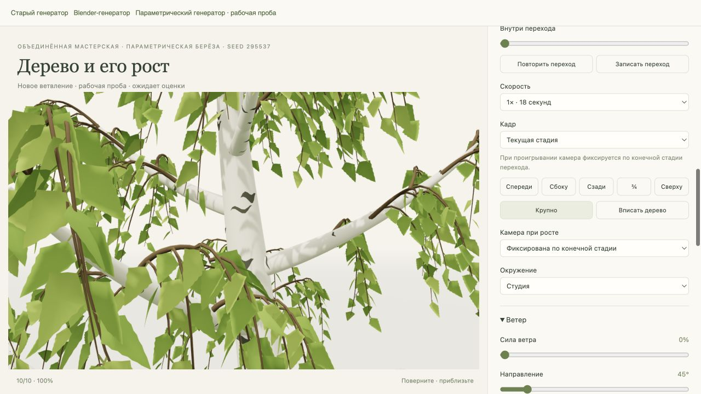

Художественно принято · технические проверки выполнены. Разные seed создают новое ветвление. Эталон 240104 закреплён по исходным данным; все варианты используют общий рост и ветер.
Открыть мастерскую · Настройки, проверки и самооценка
Силуэты различаются; отдельные листья и свисающие побеги сохраняют характер принятой берёзы. Слабые места: разреженные кроны некоторых seed, быстрое заполнение в середине роста. Художественный результат принят пользователем. Исправлена утечка ресурса при неудачной загрузке; игра не изменена.







Все 120 стадий в студии · Все 120 стадий на острове
Сборка и 324 теста прошли. Lint: 0 ошибок, 18 прежних предупреждений. Проверены крайние seed и параметры, крепления, рост, перемотка, ветер, ресурсы и контракт полива. Физический телефон не испытывался. Версия проекта 2.2.0; исходный код ещё не выпущен в main.